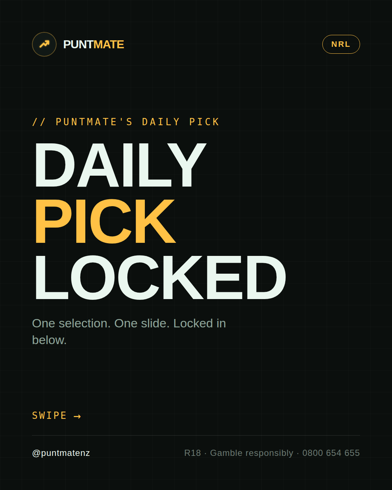
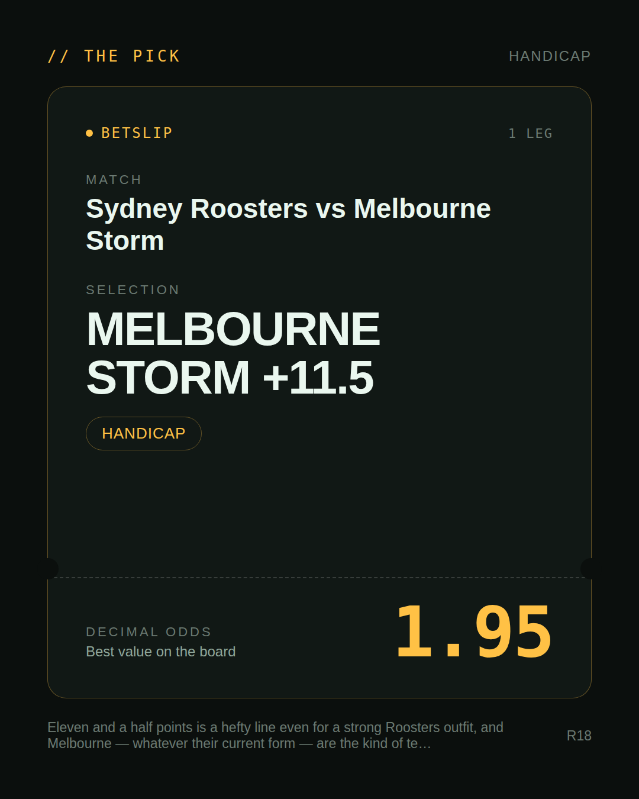
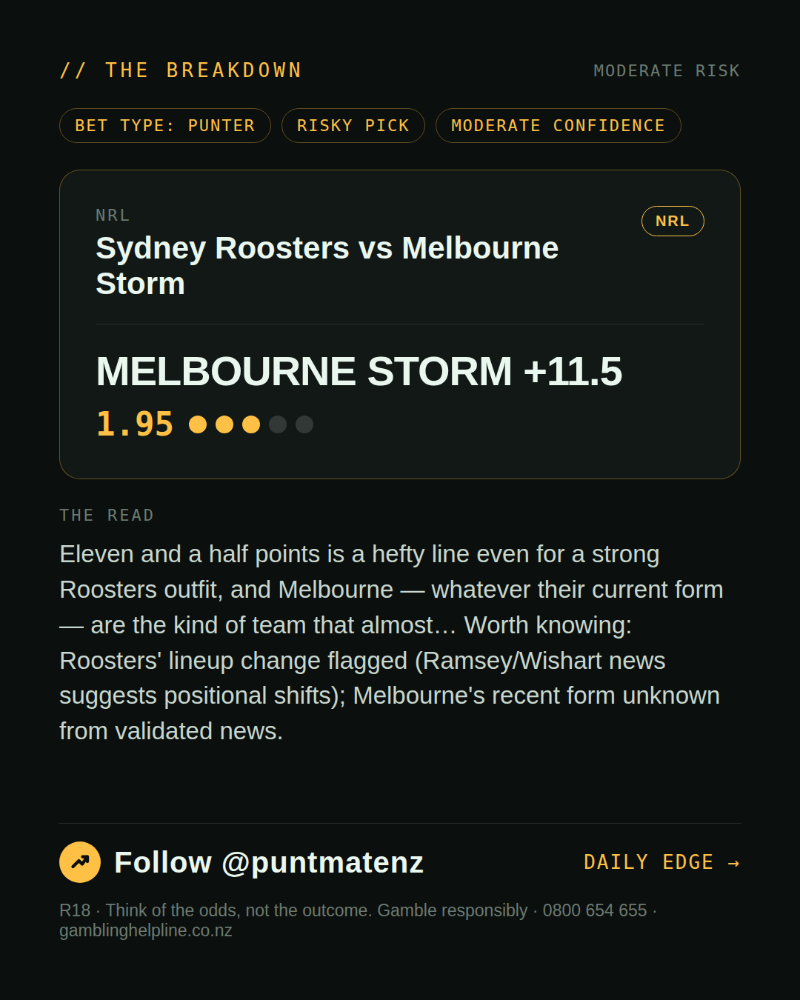
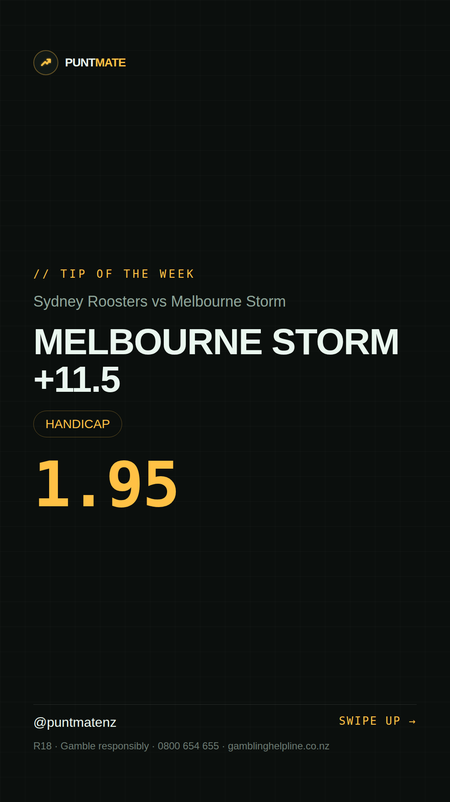

*🎯 PUNTMATE NZ — NRL* 🏟 Sydney Roosters vs Melbourne Storm *PICK:* MELBOURNE STORM +11.5 *ODDS:* 1.95 (Handicap) *BET TYPE: PUNTER* _Eleven and a half points is a hefty line even for a strong Roosters outfit, and Melbourne — whatever their current form — are the kind of team that almost… Worth knowing: Roosters' lineup change flagged (Ramsey/Wishart news suggests positional shifts); Melbourne's recent form unknown from validated news._ Keep this one light — the value's there but so is the uncertainty. ────────────────── 📲 Join Telegram for daily picks R18 · Gamble responsibly · Problem Gambling Foundation NZ: 0800 664 262
🎯 NRL — Sydney Roosters vs Melbourne Storm MELBOURNE STORM +11.5 @ 1.95 (Handicap) BET TYPE: PUNTER Solid touch here. Not a lock, but the value's real and the form backs it up. Eleven and a half points is a hefty line even for a strong Roosters outfit, and Melbourne — whatever their current form — are the kind of team that almost… Keep this one light — the value's there but so is the uncertainty. Follow for daily value picks → @puntmatenz Problem Gambling Foundation NZ: 0800 664 262 #PuntmateNZ #SportsBetting #NZTAB #NRL
| has_pick | True |
| pick_id | 2026-07-17_Sydney_Roosters_vs_Melbourne_Storm |
| run_id | 29555880927 |
| generated_at | 2026-07-17T04:53:27.890525+00:00 |
| post_date | 2026-07-17 |
| match | Sydney Roosters vs Melbourne Storm |
| sport | rugbyleague_nrl |
| sport_label | NRL |
| market | Handicap |
| selection | MELBOURNE STORM +11.5 |
| odds | 1.95 |
| bet_type | PUNTER_BET |
| bet_type_label | BET TYPE: PUNTER |
| bet_type_reason | Solid touch here. Not a lock, but the value's real and the form backs it up. Eleven and a half points is a hefty line even for a strong Roosters outfit, and Melbourne — whatever their current form — are the kind of team that almost… |
| classification | RISKY_PICK |
| risk | RISKY_PICK |
| confidence | MODERATE |
| confidence_label | MODERATE |
| final_explanation | Eleven and a half points is a hefty line even for a strong Roosters outfit, and Melbourne — whatever their current form — are the kind of team that almost… Worth knowing: Roosters' lineup change flagged (Ramsey/Wishart news suggests positional shifts); Melbourne's recent form unknown from validated news. |
| public_caution | Keep this one light — the value's there but so is the uncertainty. |
| theme | night |
| carousel_paths | ['data/review/2026-07-17_Sydney_Roosters_vs_Melbourne_Storm/cover.png', 'data/review/2026-07-17_Sydney_Roosters_vs_Melbourne_Storm/tip.png', 'data/review/2026-07-17_Sydney_Roosters_vs_Melbourne_Storm/breakdown.png'] |
| carousel_urls | ['https://raw.githubusercontent.com/kingofthecastle24/puntmate/main/data/cards/2026-07-17_Sydney_Roosters_vs_Melbourne_Storm_night_1_cover.png', 'https://raw.githubusercontent.com/kingofthecastle24/puntmate/main/data/cards/2026-07-17_Sydney_Roosters_vs_Melbourne_Storm_night_2_tip.png', 'https://raw.githubusercontent.com/kingofthecastle24/puntmate/main/data/cards/2026-07-17_Sydney_Roosters_vs_Melbourne_Storm_night_3_breakdown.png'] |
| story_path | data/review/2026-07-17_Sydney_Roosters_vs_Melbourne_Storm/story.png |
| story_url | https://raw.githubusercontent.com/kingofthecastle24/puntmate/main/data/cards/2026-07-17_Sydney_Roosters_vs_Melbourne_Storm_night_story.png |
| intended_platforms | ['telegram', 'instagram_feed', 'instagram_story', 'facebook'] |
| workflow_state | GENERATED |